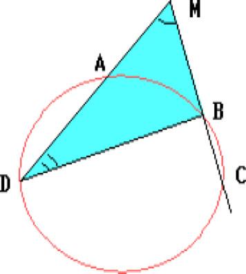

A circle is divided up by the points A, B, C, D so that $\smile{AB}:\smile{BC}:\smile{CD}:\smile{DA}$ = 3: 2: 13: 7. The chords AD and BC are continued until their intersection at point M. Find the angle AMB.
$\angle AMB$ = ½ $(\smile{DC} - \smile{AB})$ = $½ \times 10/25 \times 360^{\circ}$ = 72$^{\circ}$

72$^{\circ}$.